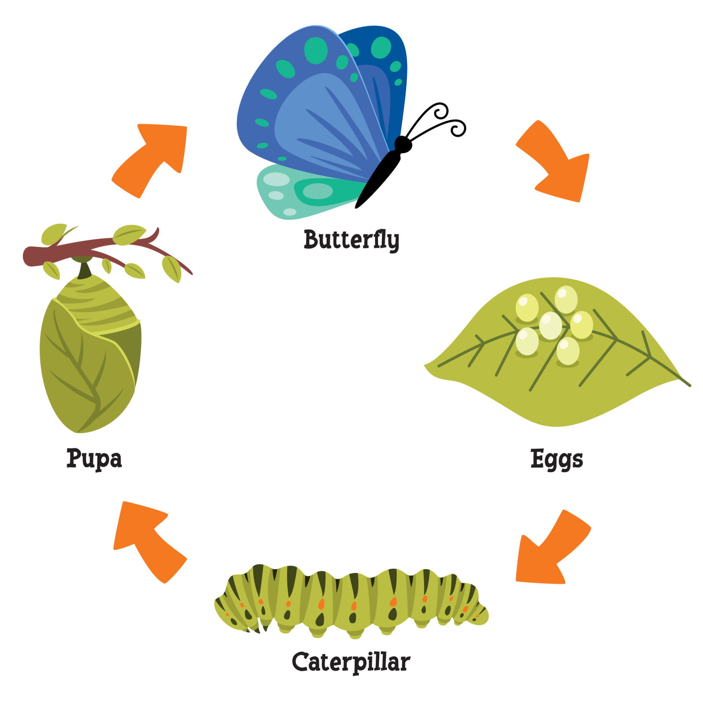
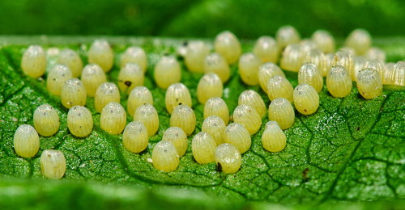
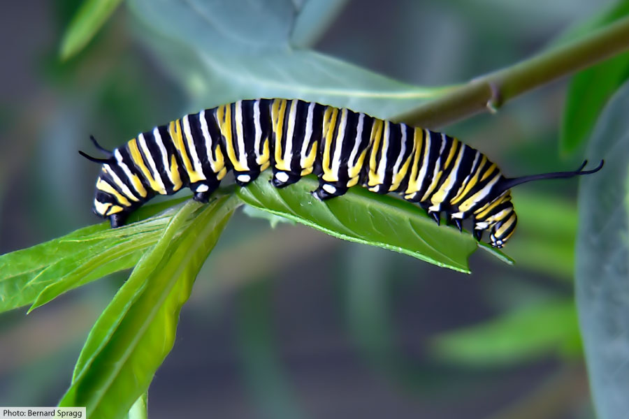
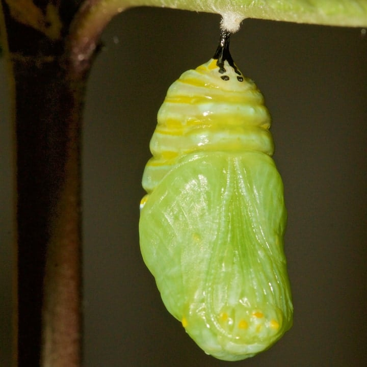
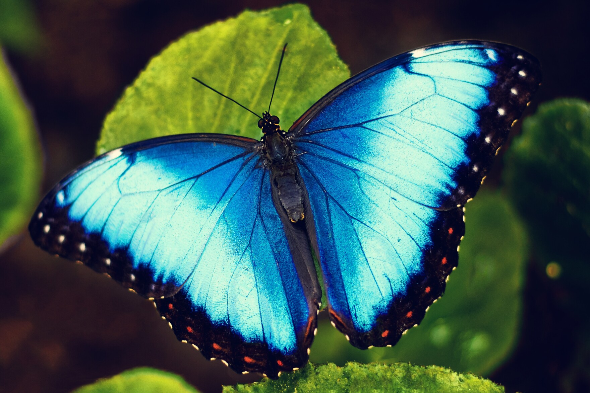

There are four stages in the metamorphosis of butterflies and moths:
-
Egg
Eggs are laid on plants by the adult female butterfly. These plants will then become the food for the hatching caterpillars
Butterfly eggs can be very small
Eggs can be laid from spring, summer or fall
-
Caterpillar: The Feeding Stage
The next stage is the larva. This is also called a caterpillar if the insect is a butterfly or a moth
The job of the caterpillar is to eat and eat and eat. As the caterpillar grows it splits its skin and sheds it about 4 or 5 times. Food eaten at this time is stored and used later as an adult
Caterpillars can grow 100 times their size during this stage
-
Pupa: The Transition Stage
When the caterpillar is full grown and stops eating, it becomes a pupa. The pupa of butterflies is also called a chrysalis
Depending on the species, the pupa may suspended under a branch, hidden in leaves or buried underground. The pupa of many moths is protected inside a coccoon of silk
This stage can last from a few weeks, a month or even longer. Some species have a pupal stage that lasts for two years
It may look like nothing is going on but big changes are happening inside. Special cells that were present in the larva are now growing rapidly. They will become the legs, wings, eyes and other parts of the adult butterfly. Many of the original larva cells will provide energy for these growing adult cells
-
Adult: The Reproductive Stage
The adult stage is what most people think of when they think of butterflies. The adults have long legs, long antennae, and compound eyes. They can also fly by using their large and colorful wings
The adult's job is to mate and lay eggs. Some species of adult butterflies get energy by feeding on nectar from flowers but many species don't feed at all
Most adult butterflies live only one or two weeks, but some species hibernate during the winter and may live several months